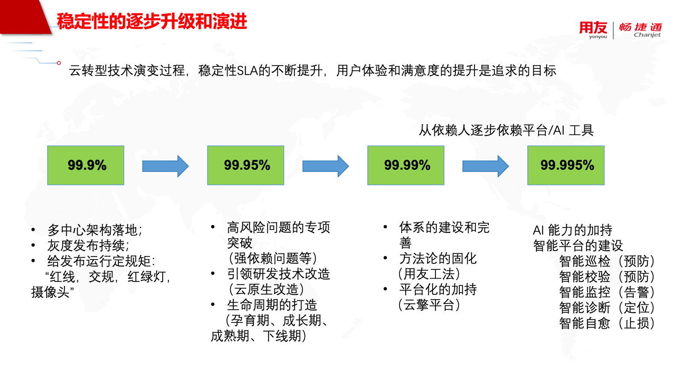
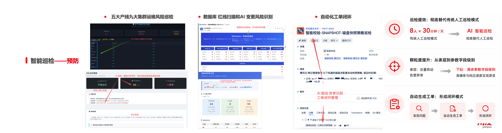
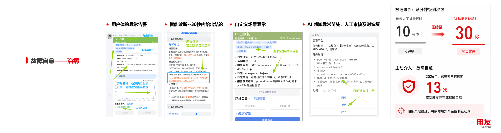
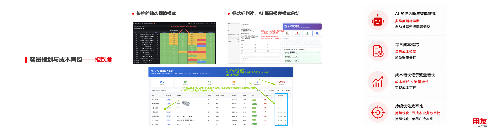

畅捷通的可观测与智能运维实践¶
一、背景与挑战¶
畅捷通作为国内头部小微企业财税及业务云服务提供商，业务覆盖五大产线、九大集群，服务数百万小微企业。目前核心业务已全面完成 SaaS 化转型与云原生改造，采用多租户、多中心架构部署。伴随客户体量持续增长、业务架构日趋复杂，原有传统运维监控体系暴露出诸多短板，主要集中在看不见、管不住、动不了三大难题，系统亟需全方位升级。
1、看不见：陷入指标陷阱，用户体验感知滞后¶
底层 CPU、内存、磁盘等基础资源监控体系搭建较早，运行成熟，但在 SaaS 化与多租户模式高速发展下，面向用户体验的可观测能力严重缺失。域名访问异常、接口响应变慢、功能报错、页面卡顿等直接影响客户体验的问题，传统监控无法主动识别，往往只能依靠客户投诉、舆情反馈后才能排查处理。团队将该问题定义为指标陷阱：底层监控指标全部显示正常，终端用户体验却已明显劣化。
2、管不住：告警泛滥低效，故障处置耗时久¶
系统规模扩张后，告警信息呈指数级爆发。单次底层存储波动，便会触发上百条关联告警，运维人员难以快速定位核心故障根因。同时告警分级、聚合能力不足，大量低优先级告警极易淹没核心紧急事件。此前从接收告警到确认故障根源，平均耗时超 10 分钟，故障全链路恢复周期拉长，平均识别时间、定位时间、修复时间、验证时间均存在较大优化空间。
3、动不了：处置依赖经验，自动化与前置防护不足¶
故障定位完成后，应急止损高度依赖资深运维人员的个人经验。尽管团队已梳理出限流、降级、切换等标准化止损方案，但在多中心、多租户的复杂架构中，始终未能落地为可一键执行的自动化预案。此外，事前风险防控能力薄弱，大量故障本可通过前置巡检、配置校验提前规避，系统性预防机制亟待完善。
基于现状，畅捷通明确升级目标：将整体服务可用性 SLA 从 99.9% 提升至 99.995%，构建99% 故障事前预防、10 分钟内完成应急止损的运维能力。围绕用户体验核心，通过技术架构与运维模式的全面重构，最终实现客户满意度稳步提升。
二、可观测体系建设 —— 全方位 "看清楚" 问题¶
针对 "看不见" 的痛点，畅捷通结合业务特性与应用分级标准（一类、二类、三类应用），搭建五层一体化监控模型，构建分层、全域、精准的可观测能力。
-
基础监控：覆盖 CPU、内存、磁盘、端口、网络等基础设施指标，筑牢系统运行底线。
-
中间件监控：聚焦 Redis、数据库、消息队列等中间件，监控资源占用、连接数、带宽等核心数据，第一时间发现组件瓶颈与连接异常。
-
应用性能监控：采集 GC 频次、线程状态、Pod 响应时长、阻塞线程等运行指标，实时把控应用健康状态。
-
业务监控：抓取日志中数据库连接异常、内存溢出、服务限流等业务级报错信号，直击业务运行本质问题。
-
用户体验监控：基于域名、核心接口访问日志，监测 500、499、302 等异常状态码及响应时延突变，站在用户视角评判服务质量。
这一五层模型的数据采集体系，与阿里云云原生可观测平台（云监控2.0）的设计理念高度契合。云监控2.0将阿里云上的日志服务SLS、应用实施管理AMRS、云监控CMS、全域智能运维平台STAROps这几个产品整合到一个平台重，提供全栈、实时、无侵入的数据接入能力，覆盖日志（数百 PB/天）、指标（数十 PB/天）、链路（数万亿调用/天）、事件（数十亿条/天）、容器和终端等多类数据源，并以冷热多级存储实现 EB 级存储规模下综合成本较开源自建降低 50%。畅捷通的五层监控数据正是通过这一统一平台进行汇聚、存储与查询分析，为上层智能化应用提供了 PB 级日写入、千亿数据秒级分析的数据底座。监控范围严格匹配应用等级：三类应用至少覆盖前三层监控，二类应用需延伸至第四层，一类核心应用必须实现五层监控全覆盖。整套体系遵循全量采集、多维校验、及时触达三大原则：全量数据采集消除监控盲区；多维度交叉验证规避单一指标误判；搭配电话、短信、钉钉、邮件等多渠道通知，保障紧急告警直达值班人员。
在此基础上，畅捷通引入 云监控2.0 基于 UModel 的运维数字孪生能力，搭建应用-资源-租户三维拓扑架构。UModel 以统一图模型组织实体、关系、观测数据和运维知识，将云产品（ECS/VPC/SLB/RDS/ACK 等）、Kubernetes 资源（Cluster/Pod/Node/Deployment/Service 等）、应用（微服务/实例/接口/HTTP/消息/数据库调用等）以及企业自定义扩展（CMDB、CI/CD 流程、自建中间件、运维 SOP/知识库等）纳入统一语义模型。结合服务间调用链、网关全链路追踪，联动应用、租户标签画像，运维人员可从单条用户体验告警逐层下钻，快速定位异常实例、资源瓶颈及受影响租户。同时完成告警精细化分级、聚合归并与升级机制，将同源故障告警合并为单一事件，依托根因分析模块辅助排查。完善的可观测数据与拓扑能力，为后续 AI 全链路诊断、告警降噪打下坚实的数据底座，实现 30 秒内完成全链路分析。
三、智能运维演进与平台架构 —— 高效 "管起来、治得了"¶
可观测体系解决了问题感知难题，而从发现故障到彻底解决，还需依托平台能力与运维模式的持续迭代。畅捷通在云原生转型过程中，将智能运维划分为四个演进阶段，每一轮升级均带动 SLA 指标与综合运维能力实现跨越式提升。

阶段一：体系建设期（SLA 99.9%）。
核心动作是建立应用生命周期管理、业务等级模型和基础红线规范。对发布变更建立规矩——畅捷通内部用"红线、交规、红绿灯、摄像头"来形象比喻。同步落地多中心架构与灰度发布体系，强化容灾与发布管控能力。平台侧建成监控、事件、资源三大基础中心，统一数据采集、模板与策略标准。本阶段以人工运维为主，平台仅作为工具支撑，依靠制度约束减少人为操作失误。
阶段二：平台化加持期（SLA 99.95%）。
从架构、历史问题、应用全生命周期三大维度发力：推进全量业务云原生改造，化解系统性风险；专项治理强依赖、老旧组件等历史技术债务；按照应用阶段匹配差异化运维策略。平台能力全面拓展，形成基础服务层 - 平台能力层 - 业务层的完整架构，为运维方法论落地提供载体。
阶段三：方法论固化期（SLA 99.99%）。
有了体系规范，以及自研云擎平台（KSC 靠山稳定性平台）打造 DevSecOps/AIOps 的一体化底座作为基础，畅捷通在大量实战积累后，将经验沉淀为可复制的方法论体系——内部称之为"用友工法"。核心是"0-2-5-10"应急方法论：故障预防目标0事故（事前），及时感知2分钟内（MTTI），根因分析5分钟内（MTTK），止损恢复10分钟内（MTTF+MTTV）。方法论的价值在于将前两个阶段积累的最佳实践"固化"为可标准化执行的流程——让任何一个OnCall人员按照方法论框架都能达到一致的响应质量，将团队的整体作战能力从"依赖少数专家"提升为"全员可执行"。
阶段四：AI能力加持期（SLA 99.995%）。
在平台化和方法论双重基础上全面叠加AI能力，工作模式从"以人为主"彻底转向"AI为主、人审核"。平台交互层升级为智能座舱（全局视图）、数字员工（AI虚拟员工）和个性化工作台，以MCP/Skill模式交付AI能力，实现AI的持续交付和能力复用。核心智能运维模块包括：智能巡检（预防）、智能告警（告警降噪）、智能诊断（定位边界）、智能自愈（多维指标联动）、容量预测、配置校验，与监控中心、事件中心联动形成"感知→分析→决策→执行"闭环。AI大模型深度嵌入各环节，目标是彻底脱离人工依赖，实现故障提前预防、减少人工干预、快速止损的终极愿景。
四个阶段的核心逻辑是"从依赖人逐步依赖平台/AI工具"。先建体系打基础、再建平台做载体、然后沉淀方法论可复制、最后叠加AI实现自治——每一次SLA的提升，背后都是一次能力层级和认知水平的跃迁。
四、AI场景落地——三大闭环¶
在第四阶段的AI能力框架下，畅捷通落地了多个核心智能运维场景：
智能巡检——预防（"体检"）。¶
覆盖五大产线九大集群的全量运维风险，执行三类自动化巡检任务。其一是运维风险巡检，包括资源容量趋势、配置合规性、依赖健康度、组件版本风险等维度的定期扫描。其二是数据库红线扫描，针对慢 SQL、大表膨胀、连接池水位、索引缺失、大内存问题等 DBA 关注的高风险指标进行 AI 识别。其三是变更风险识别，在变更执行前自动评估影响范围和风险等级——包括 SQL 异常识别、单租户异常行为检测和资源容量突变预判。
巡检发现的问题自动生成工单，流转至责任团队，形成"发现->工单->修复->验证"的自动化闭环，替代过去依赖人工巡检和口头传递的低效模式。基于用户设定的巡检目标，系统自动拆解任务步骤，按定时调度持续执行跨天、跨周的异步巡检任务，基于日志服务SLS的数据平台提供了高性能的海量数据查询能力，结合Umodel快速执行巡检查询作业，展示巡检进展与发现，遇到高风险问题时自动触发人工确认，确保巡检结论可靠可控。智能巡检关注的是"数据变化"，智能校验关注的是"配置标准"——二者配合实现全方位预防。

故障自愈——止损（"治病"）。¶
针对已识别的高频故障场景，预定义自愈策略并实现自动化执行。典型场景包括：单租户资源异常消耗（触发用户隔离）、连接池水位突破阈值（触发接口限流）、单节点不可用（触发中心切换）、下游服务响应劣化（触发功能降级）、流量突增（触发资源扩容）。
AI 感知异常苗头后自动匹配最佳场景，触发对应恢复动作。目前采用"AI 感知+人工审核"模式：自定义场景异常由 AI 识别并推荐处置方案，人工审核确认后自动执行恢复。在这一过程中，智能运维助手的诊断推理能力为故障根因定位提供了核心支撑——围绕告警自动收集证据，分析影响范围、关联服务和异常指标，结合 UModel 运维数字孪生还原故障全貌和传播路径，实现跨域关联分析而非单点排查。自愈能力由平台的"AI 识别/调度中心"承载，通过作业编排实现故障注入（验证）和故障自愈（执行）的统一管理。新增故障模式后可快速配置为自愈规则，降低止损对个人经验的依赖。同时保留人工手动执行通道，确保极端场景的兜底能力。

容量预测与成本管控——控成本（"控饮食"）。¶
替代传统静态阈值的容量告警模式，引入AI时序预测能力。传统模式下，容量告警依赖固定阈值（如CPU>80%报警），存在阈值设置不合理、无法预判未来趋势的问题。新模式下，AI基于三个维度进行综合判断：历史容量规律（周期性峰谷识别）、业务增长趋势（与业务指标关联预测）、突变事件检测（识别非周期性异常增长）。云监控2.0提供了丰富的AI 分析原子能力，包括时序预测、时序聚类和异常检测等算子，算子将计算下推至底层引擎，在海量指标数据上完成高效推理。畅龙虾平台每日自动生成容量报表，AI进行趋势总结和风险预警，提前数天预判容量不足风险。结合FinOps成本管控模块（畅云管账），实现"容量风险提前预判→资源生命周期管理→费用使用率优化→资源打分与成本优化"的一体化管控。成果是双向的：既避免资源浪费降低成本，又预防容量不足引发的可用性故障。

五、成果与价值¶
经过四个阶段的持续演进，畅捷通实现了核心指标的全面突破：
整体SLA从99.9%提升至99.995%，历经三个台阶的可用性跃迁（年度不可用时间从近9小时压缩到不足半小时）。故障定位时间从平均10分钟以上压缩至30秒以内，MTTR中的MTTK环节效率提升超过20倍。应急体系达成"99%事前预防、10分钟内止损"的既定目标——这意味着绝大多数潜在故障在触达用户之前就已被智能巡检和校验机制拦截。运维模式完成从"以人为主、平台辅助"到"AI为主、人审核"的范式转换，OnCall值班从传统的人工持续监控模式，升级为AI持续监测+人工处理升级事件的协作模式，运维团队的精力从重复性故障响应中释放出来，转向架构优化和能力建设等更高价值的工作。
从更深层的能力维度看，最核心的变化是建立了"可观测数据→AI分析→自动化动作→知识沉淀"的持续正循环。每一次故障处理的经验都通过知识库沉淀反馈给AI，使智能诊断和自愈的覆盖率和准确率不断提升——系统越用越"聪明"，对人的依赖越来越轻。
同时，智能运维不再只是运维团队的工具，而是通过"运维洞察→开发规范"的经验闭环，反向引领研发技术改造。AI发现的性能瓶颈和架构风险，转化为研发侧的红线规则和最佳实践，从源头降低故障概率。例如，智能诊断频繁发现的某类慢SQL模式，会被自动提炼为数据库开发规范的新增条目，在代码Review和发布流水线中前置拦截。
从组织协作维度看，畅捷通在可观测平台上实现了运维知识的体系化沉淀。原本分散在各专家头脑中的故障排查经验、架构理解和处置判断，通过数字员工的知识库、Skill 机制和 MCP 扩展实现了组织级的知识资产化。新人借助平台工具和 AI 辅助可以快速进入角色，团队整体的响应一致性和可靠性显著提升。
这种"以用户体验为中心、以 AI 为驱动、从运维到研发贯通"的闭环模式，正是畅捷通全面迈向 AI Agent 时代、构建下一代技术运营体系的核心方法论。而 云监控2.0的STAROps 作为 Agentic Ops 平台，以统一可观测数据、运维数字孪生、AI 分析算子和持续进化飞轮四大核心能力，为这一方法论的落地提供了开箱即用的技术底座。